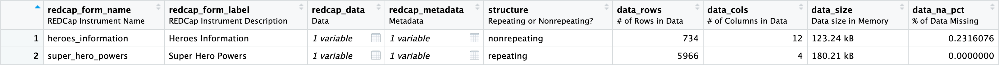
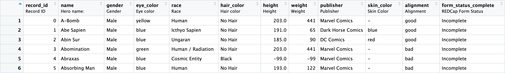

library(REDCapTidieR)
superheroes <- read_redcap_tidy(redcap_uri, token)
# superheroes |>
# dplyr::glimpse()
superheroes |>
rmarkdown::paged_table()REDCapTidieR 0.2.0 🦃
REDCap
REDCapTidieR
R
REDCapTidieR v0.2.0 release announcement and change descriptions.
We’re thrilled to announce the release of REDCapTidieR v0.2.0 on CRAN! REDCapTidieR provides an user-friendly way to import data from a REDCap database into an R environment. You can install the current version from CRAN using install.packages("REDCapTidieR").
The workhorse of REDCapTidieR is the read_redcap_tidy() function which uses REDCapR to issue API calls against a REDCap database and then cleans up what’s returned to make it easy to use. read_redcap_tidy returns a special object, the supertibble, which contains data and metadata in neatly organized tidy tibbles.
Hello metadata!
A key change to REDCapTidieR in v0.2.0 is that the supertibble now includes a lot of additional instrument-level metadata.
REDCapTidieR 0.2.0 provides the following new columns:
redcap_form_label: The instrument’s human-readable labelredcap_metadata: REDCap metadata associated with the instrument (derived fromREDCapR::redcap_metadata_read)redcap_events: Events and arms associated with this instrument (for longitudinal projects only)data_rows,data_cols: Row and column counts ofredcap_datadata_size: Size of theredcap_datatibble in memorydata_na_pct: The percentage of missing data in the correspondingredcap_data
REDCapTidieR ❤️ labelled
The labelled package provides an elegant way to decorate the variables of a data frame with descriptive labels. Take a look at Shannon Pileggi’s blog post The case for variable labels in R to find out why you might want to use them.
REDCapTidieR now provides make_labelled, a high-level function that attaches labels to the supertibble and the tibbles it contains:
superheroes_labelled <- superheroes |>
make_labelled()In the RStudio Viewer, variable labels appear below each variable name. This makes it easy to inspect the contents of the supertibble:

While the variable labels in the supertibble are pre-defined, variable labels in the data tibbles (in redcap_data) are derived from the REDCap field labels. This way, field labels seen in REDCap during data entry are repurposed as variable descriptions:

New read_redcap_tidy arguments
To enhance and expand the capabilities of read_redcap_tidy, we’ve introduced two new arguments to pass to the API:
formsexport_survey_fields
Retrieve data from a subset of instruments
You can now download specific forms from your database instead of defaulting to downloading the entire dataset. This can be useful for very large databases.
superheroes_powers <- read_redcap_tidy(redcap_uri,
token,
forms = "super_hero_powers")
# superheroes_powers |>
# dplyr::glimpse()
superheroes_powers |>
rmarkdown::paged_table()Support for REDCap surveys
Instruments that are used as surveys generate additional data fields:
[instrument_name]_timestamp: the time at which the survey was competedredcap_survey_identifier: the participant identifier (this will beNAif the Participant Identifier feature in REDCap is disabled)
By default, read_redcap_tidy will now return these fields if the instrument is used as a survey.
survey_database <- read_redcap_tidy(redcap_uri,
survey_token,
forms = "survey",
export_survey_fields = TRUE)
survey_database$redcap_data[[1]] |>
dplyr::glimpse()Rows: 4
Columns: 9
$ record_id <dbl> 1, 2, 3, 4
$ survey_yesno <lgl> TRUE, FALSE, NA, NA
$ survey_radio <fct> Choice 1, Choice 2, NA, NA
$ survey_checkbox___one <lgl> FALSE, FALSE, FALSE, FALSE
$ survey_checkbox___two <lgl> TRUE, TRUE, FALSE, FALSE
$ survey_checkbox___three <lgl> TRUE, TRUE, FALSE, FALSE
$ survey_timestamp <dttm> 2022-11-09 10:33:35, NA, NA, NA
$ redcap_survey_identifier <lgl> NA, NA, NA, NA
$ form_status_complete <fct> Complete, Incomplete, Incomplete, IncompleteNote the inclusion of the redcap_survey_identifier and survey_timestamp columns.
Performance improvements and enhancements
- Improved execution time by >2.5X by optimizing internal functions
check_repeat_and_nonrepeat,distill_*_table_long, andmulti_choice_to_labels - All warnings and error messages are now produced using
cli - Tests and vignettes now use
httptestto mock and cache REDCap API calls - Replaced deprecated
.datapronoun in tidyselect expressions
Bug fixes
- Fixed a bug in which similarly named variables could be duplicated under some circumstances
- Order of instruments in the supertibble is now the same as the order of instruments in REDCap
- Fixed an issue in which
extract_*functions under some circumstances returnedNULLinstead of the expected tibbles